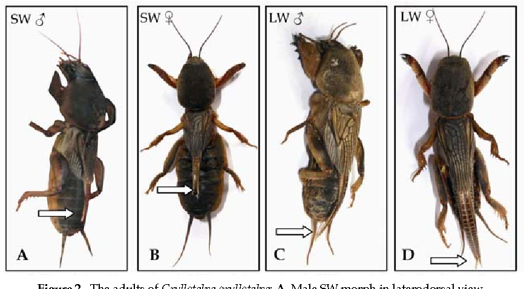
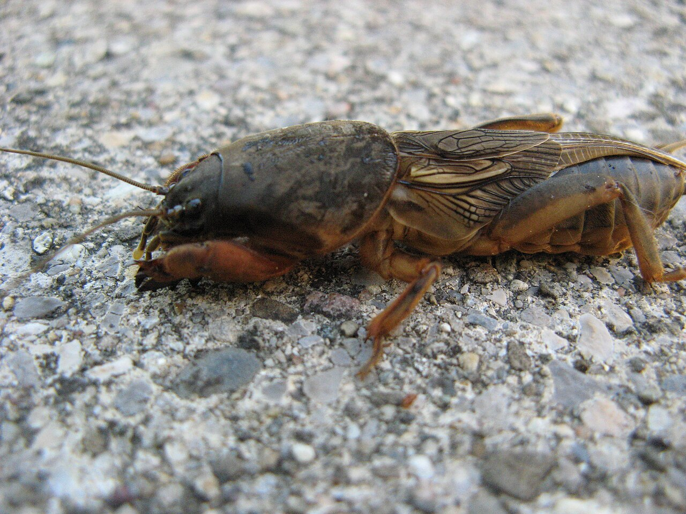

El grillotalpa.grillo topo, grillo murrio, grillo cebollero, alacrán cebollero o grillo real (Gryllotalpa gryllotalpa) es una especie de insecto ortóptero de la familia Gryllotalpidae nativo de Europa Occidental y norte de África, aunque ha sido exportado al este de Asia, a América del Sur, al este de Estados Unidos. y en al sur de España
El nombre científico deriva del latín gryllus que significa 'grillo' y talpa que significa 'topo', y se refiere a la similitud que tiene este insecto con los topos por sus hábitos subterráneos.
Descripción
Los machos miden 50 mm y las hembras 70 mm de longitud. El cuerpo es de color marrón y cubierto por una fina capa de pelo y sus patas delanteras son grandes y preparadas para cavar. Sólo en la etapa adulta tienen alas y vuelan de una manera torpe y en raras ocasiones por la noche
Hábitat y distribución geográfica
El hábitat ideal es de césped corto en zonas arenosas o turbosas de Europa (excepto Noruega y Finlandia), el oeste de Asia y el norte de África. También ha sido introducido accidentalmente en los Estados Unidos, donde se sigue difundiendo, al Sur de América y también;[cita requerida] Menorca, Ibiza (casos puntuales de Grillotopo).
Biología
Las hembras cavan cámaras donde ponen sus huevos. Los machos, más pequeños, las cavan para hacer de su canto más fuerte y atraer a las hembras, sus patas
también sirven para defender sus territorios. Aunque pueden manifestar conductas agresivas y su aspecto parece amenazador, son inofensivos para el humano. De
100 a 350 huevos son puestos en cámaras subterráneas sobre final de julio. Hacen eclosión en diez a veinte días y la hembra continúa cuidando sus crías por dos o tres
semanas. Las ninfas pasan por seis mudas, comienzan a madurar a partir de la primavera siguiente si bien algunas no maduran hasta el tercer año desde la puesta
Se pueden encontrar adultos y ninfas durante todo el año en túneles que pueden
alcanzar una profundidad de hasta un metro. Son omnívoros. Pueden llegar a ser
una amenaza para los cultivos.
Conservación
Estado (Reino Unido)
Aunque es relativamente común en muchas partes de Europa continental, en el Reino Unido G. gryllotalpa se considera en peligro ya que solo ha habido cuatro
avistamientos confirmados entre 1970 y 2001. Solía ocurrir en 33 vicecondados,
principalmente en el sur de Inglaterra, pero
también en el sur de Gales, el oeste de Escocia e Irlanda
del Norte. Su área de distribución se ha reducido y ahora
puede estar extinta. Existe un plan de acción que tiene
como objetivo mantener las colonias supervivientes,
establecer un programa de cría en cautividad y establecer
colonias autosuficientes en toda su área de distribución
anterior.